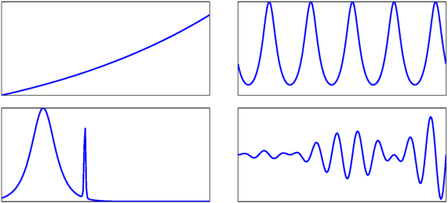
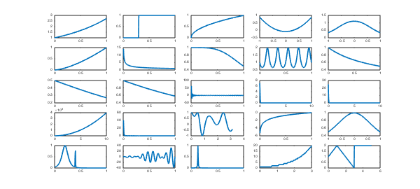
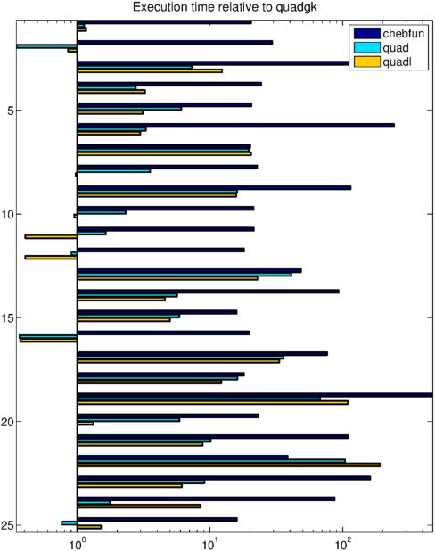
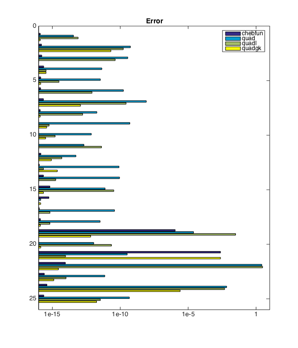
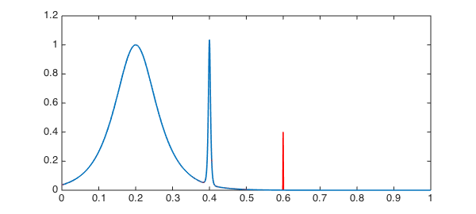

This Example gives an idea of how Chebfun performs as a general-purpose integrator. We apply it to the set of test functions considered by Kahaner [1], Gander & Gautschi [2], and Gonnet [3]:
funs = {
@(x) exp(x)
@(x) double( x >= 0.3 )
@(x) sqrt(x)
@(x) (23/25) * cosh(x) - cos(x)
@(x) 1 ./ (x.^4 + x.^2 + 0.9)
@(x) sqrt( x.^3 )
@(x) 1 ./ sqrt(x)
@(x) 1 ./ (1 + x.^4)
@(x) 2 ./ (2 + sin(10*pi*x))
@(x) 1 ./ (1 + x)
@(x) 1 ./ (1 + exp(x))
@(x) x ./ (exp(x) - 1)
@(x) sin(100 * pi * x) ./ (pi * x)
@(x) sqrt(50) * exp(-50*pi*x.^2)
@(x) 25 * exp(-25*x)
@(x) 50 / pi * (2500 * x.^2 + 1)
@(x) 50 * (sin(50*pi*x) ./ (50*pi*x)).^2
@(x) cos( cos(x) + 3*sin(x) + 2*cos(2*x) + 3*sin(2*x) + 3*cos(3*x) )
@(x) log(x)
@(x) 1 ./ (x.^2 + 1.005)
@(x) 1 ./ cosh( 10 * (x - 0.2) * 2 ) + ...
1 ./ cosh( 100 * (x - 0.4) * 4 ) + ...
1 ./ cosh( 1000 * (x - 0.6) * 8 )
@(x) 4 * pi^2 * x .* sin(20*pi*x) .* cos(2*pi*x)
@(x) 1 ./ (1 + (230*x - 30).^2)
@(x) floor(exp(x))
@(x) (x < 1) .* (x + 1) + ...
(1 <= x & x <= 3) .* (3 - x) + ...
(x > 3) * 2
};
The intervals of integration are these:
ranges = [ 0 1 ; 0 1 ; 0 1 ; -1 1 ; -1 1 ; 0 1 ; 0 1 ; 0 1 ; 0 1 ; ...
0 1 ; 0 1 ; 0 1 ; 0 1 ; 0 10 ; 0 10 ; 0 10 ; 0 1 ; 0 pi ; ...
0 1 ; -1 1 ; 0 1 ; 0 1 ; 0 1 ; 0 3 ; 0 5 ];
The exact values (computed with Maple) are these:
f_exact = [ 1.7182818284590452354 , 0.7 , 2/3 , 0.4794282266888016674 , ...
1.5822329637296729331 , 0.4 , 2 , 0.86697298733991103757 , ...
1.1547005383792515290 , 0.69314718055994530942 , 0.3798854930417224753 , ...
0.77750463411224827640 , 0.49898680869304550249 , ...
0.5 , 1 , 0.13263071079267703209e+08 , 0.49898680869304550249 , ...
0.83867634269442961454 , -1 , 1.5643964440690497731 , ...
0.16349494301863722618 , -0.63466518254339257343 , ...
0.013492485649467772692 , 17.664383539246514971 , 7.5 ];
To get the flavor of our experiment, here are integrands 1, 9, 21, and 22:
clf
ii = [1 9 21 22]; LW = 'linewidth'; FS = 'fontsize';
for i = 1:4
xx = linspace( ranges(ii(i),1) , ranges(ii(i),2) , 200 );
axes('position',[.03+.5*mod(i-1,2) .53-.5*floor((i-1)/2) .44 .44])
plot( xx , funs{ii(i)}(xx) , LW, 1.6), grid on
set(gca,'xtick',[],'ytick',[])
end

Here is the collection of all 25:
for i = 1:length(funs)
xx = linspace( ranges(i,1) , ranges(i,2) , 200 );
subplot(5,5,i), plot( xx , funs{i}(xx) )
set(gca,FS,5)
end

We now create and fill two arrays with the relative errors and times used for each quadrature routine and each function integrated to a relative tolerance of $10^{-10}$. We create the chebfuns with splitting on and blowup=2 to account for difficult and singular integrands. (For more accurate timing results one could perform each integration, say, 10 times by setting runs = 10.)
errs = zeros(25,4);
time = zeros(25,4);
runs = 1; tol = 1e-10;
for i = 1:length(funs)
% Chebfun
tic
for k = 1:runs
q = sum( chebfun( funs{i} , ranges(i,:) , ...
'splitting' , 'on' , 'blowup' , 2 ) );
end
time(i,1) = toc/runs;
errs(i,1) = abs( ( q-f_exact(i) ) / f_exact(i) );
% quad
tic
for k = 1:runs
q = quad( funs{i} , ranges(i,1) , ranges(i,2) , tol*f_exact(i) );
end
time(i,2) = toc/runs;
errs(i,2) = abs( ( q-f_exact(i) ) / f_exact(i) );
% quadl
tic
for k=1:runs
q = quadl( funs{i} , ranges(i,1) , ranges(i,2) , tol*f_exact(i) );
end;
time(i,3) = toc/runs;
errs(i,3) = abs( ( q-f_exact(i) ) / f_exact(i) );
% quadgk
tic
for k=1:runs
q = quadgk( funs{i} , ranges(i,1) , ranges(i,2) , 'RelTol' , tol );
end
time(i,4) = toc/runs;
errs(i,4) = abs( ( q-f_exact(i) ) / f_exact(i) );
end
Warning: Maximum function count exceeded; singularity likely. Warning: Maximum function count exceeded; singularity likely. Warning: Maximum function count exceeded; singularity likely. Warning: Maximum function count exceeded; singularity likely.
To give an idea of how the algorithms compare, we plot both the times and the achieved accuracies in bar charts. First, consider the execution times. The chart scales these relative to the time required by quadgk. What we see here is that quad and quadl are typically about 5 times slower than quadgk, and Chebfun is typically about 5 times slower than quad and quadl.
clf
barh( time ./ (time(:,4)*ones(1,4) ) )
FS = 'fontsize';
title('Execution time relative to quadgk',FS,14)
legend('chebfun','quad','quadl'), axis tight
set(gca,'XScale','log','YDir','reverse')
scrsz = get(0,'ScreenSize');
set(gcf,'position',[0 0 600 scrsz(4)])

Now let us look at accuracies. The next plot shows relative errors scaled to the required tolerance of 1e-10. Here we see that all the codes usually do better than prescribed, with quad and quadl failing most often. Chebfun, which is working in its default mode, usually gets close to machine precision, and quadgk also usually gets many more digits than requested.
clf
barh( (errs+1e-20) / 1e-10 )
title('Error',FS,14)
legend('chebfun','quad','quadl','quadgk')
axis([1e-6 1e11 0 26])
set(gca,'XScale','log','YDir','reverse')
set(gcf,'position',[0 0 600 scrsz(4)])
set(gca,'xtick',10.^(-5:5:10))
set(gca,'xticklabel',{'1e-15','1e-10','1e-5','1'})

Chebfun does poorly in two cases. With the 19th function $\log(x)$, it loses many digits of accuracy. This is a problem of Chebfun's treatment of singularities that we hope will be improved in the future. There is also a failure with the 21st function. To see what went wrong in that case, we plot the function and its chebfun:
close
xx = linspace(ranges(21,1),ranges(21,2),1023)';
plot( xx , funs{21}(xx) , '-r' )
hold on, plot( chebfun( funs{21} , ranges(21,:) , ...
'splitting' , 'on' , 'blowup' , 'on' ) ), hold off

Evidently Chebfun missed the third spike at $x=0.6$. This can be fixed by increasing minSamples:
q = sum( chebfun( funs{21} , ranges(21,:), ...
'splitting' , 'on' , 'blowup' , 'on' , 'minSamples', 65) );
abs( ( q - f_exact(21) ) / f_exact(21) )
ans =
0
References
-
David K. Kahaner, "Comparison of numerical quadrature formulas," in Mathematical Software, John R. Rice, ed., Academic Press, 1971, pp. 229-259.
-
Walter Gander & Walter Gautschi, "Adaptive quadrature -- revisited", BIT Numerical Mathematics, 40(1):84-101, 2000.
-
Pedro Gonnet, "Increasing the reliability of adaptive quadrature using explicit interpolants", ACM Transactions on Mathematical Software, 37(3):26:1--26:32, 2010.